What goes into a hub, and the two ways to get it into the app: tell us, or open a pull request.
Your hub only contributes content. Global Shapers Valencia runs the app, the database and the hosting. What makes a hub "yours" is one small configuration file plus, optionally, some new images. This guide explains what goes in that file and the two ways to get it into the app.
The name shown in the hub selector (e.g. "Valencia, España"), your country, and the language your community will use.
Which images from the shared bank your community sees, and how many per session (10 by default, drawn at random).
For each training image: a short title and an explanation, in your language, of what gives an AI image away.
Both end the same way: your hub's file lands in the repository and the app picks it up on its own. No manual database step, no code change for a new hub. Choose whichever fits your team.
| Route A · Tell us | Route B · Open a pull request | |
|---|---|---|
| You do | Send us the information and any images by email, using the template in Appendix A. | Add your hub's files to the GitHub repository yourself and open a pull request. |
| You need | Nothing technical. | A GitHub account and basic comfort editing a JSON file. Node.js only if you want to preview locally. |
| We do | Write the config, add and upload images, review, deploy. | Review the PR, merge, and upload any new images. |
| Best when | Your hub has no developer, or you want the shortest path. | A volunteer knows GitHub, or you want to keep editing your own texts later. |
| Go to | Page 3 | Pages 4–5 |
These apply to both routes. Settle them before you send anything or open a PR.
The interface (buttons, consent text, results screen) is currently available in Spanish and English. If your hub uses one of those, there's nothing to do.
If your hub uses another language, the interface needs a translation of 37 short strings (listed in Appendix B). Without it, your community would see the Spanish interface. Your training texts are always written in your own language, whatever the interface.
All hubs share one image bank: currently 107 images (57 AI-generated, 50 real). Each image is labelled real or AI once, centrally, so your hub never has to. The photos and AI images come from the open Defactify Image Dataset (real photos from MS COCO, AI images from Midjourney 6). Your options:
| Option | What it means |
|---|---|
| Use the whole bank | The simplest option and our default suggestion. Your community gets a random 10 out of all 107. |
| Pick a subset | If some images feel out of place for your region, choose the ones that fit. Ask us for the image catalogue (ids and labels) to choose from. |
| Add your own | Real photos from your city or region, plus AI-generated images. They join the shared bank, so other hubs may use them too. |
| More from the generic dataset | Want a bigger bank? Tell us how many extra AI and real images you'd like and we'll import them from the same dataset. |
After the quiz, players can walk through training cards: image + real/AI label + your title + your explanation. Two complete sets already exist, one in Spanish (Valencia) and one in English (Generic). Each has 8 cards:
img001 Look for the watermark · img002 From counting fingers to reading tricky hands · img003 Background text no longer gives it away · img004 Patterns that break · img005 Shadows and reflections that don't add up · img006 Repeated background elements · img007 That too-perfect colour · img085 Want to learn more? (closing card with links)
Spanish-speaking hubs can use Valencia's set as is. English-speaking hubs can use the Generic set. Nothing to write.
We send you a set; you translate it into your language. Keep the same image ids so each text still matches its picture.
For your own images, or to add local context (regional signage, local scams, local languages or scripts). One short title and 2–4 sentences: what to look at and why it gives the image away.
Keep in mind: a text describes a specific image (e.g. img002 points at hands holding a sandwich). If you change the image, change the text.
No GitHub, no code. You provide the content; Valencia Hub does everything technical.
| Topic | Send us |
|---|---|
| Identity | Hub name as it should appear (e.g. "Lisbon, Portugal"), country, language, and a contact person. |
| Images | Choose one or combine: the whole shared bank · a list of ids from the catalogue · your own files · a number of extra images from the generic dataset. Also say how many should be shown per session (default 10). |
| Explanations | Choose one: reuse Valencia's Spanish set · reuse the English Generic set · your translation of one of them · your own texts (for each image: its id or file name, a title, an explanation). |
| Interface language | Only if it's not Spanish or English: the 37 strings from Appendix B, translated. |
You add your hub's files to the repository at github.com/Valencia-Hub-Global-Shapers/aiwareness. Automated checks tell you straight away if something is wrong.
| File | What you do | |
|---|---|---|
locales/<language>/<hub-id>/config.json | Always | New file. Your identity, image list and training texts. Start from a copy of es/valencia-hub or en/generic-hub. |
content/images/imgNNN.ext | If adding images | Add each new image at the next free id (currently img108). No subfolders. |
content/manifest.json | If adding images | One line per new image: its file and is_ai_generated true/false. |
lib/i18n.ts | If not es / en | Add your language code, a dictionary with the 37 interface strings (Appendix B), and register it in DICTIONARIES. |
Nothing else. Don't touch app/, components/, scripts/, supabase/ or .github/. The hub selector and the database's hub list are generated from your config.json, so there is no manual step in either.
config.json{
"hub": "your-city-hub", // lowercase-with-hyphens; MUST equal the folder name
"label": "Your City, Country", // what players see in the hub selector
"country": "Country", // used to group the statistics
"language": "en", // MUST equal the parent folder: locales/en/...
"phase1_pool": ["img001", "img002", "img003", "..."], // ids from manifest.json
"phase1_sample_size": 10, // how many each player sees per session
"phase2": [ // training cards, shown in this order
{
"id": "img001", // which image the card shows
"title": "Look for the watermark",
"explanation": "Before focusing on any other detail..."
}
]
}
hub, label, country and language are all present, and hub matches its folder name.phase1_pool is not empty, and every id in it exists in manifest.json.phase1_sample_size is a number of 1 or more. If it's larger than your pool, players simply get the whole pool.phase2 entry has an existing id, a title and an explanation.locales/<language>/<hub-id>/ with the same language code as inside the file (that's the path the app loads from), and phase2 needs at least one entry (the training screen breaks without it).\".add-your-city-hub.locales/es/valencia-hub/ or locales/en/generic-hub/ to locales/<language>/<hub-id>/ and edit the four identity fields.phase1_pool (delete ids you don't want) and phase1_sample_size.phase2. Keep the ids that match the images you want to teach with.content/images/ and add their lines to content/manifest.json, then reference the new ids from your config. Shortcut for the generic dataset: node scripts/import-hf-images.js --ai 20 --real 20 downloads random images and registers them. Check each one by eye (label, nothing inappropriate) and delete rejects with their manifest line.lib/i18n.ts (the Language type, a new dictionary with the same keys, and the DICTIONARIES map).npm install node scripts/validate-configs.js # the same check the PR will run npm run dev # http://localhost:3000, nothing is saved npm run lint && npm run build # optional, but CI runs both
npm run dev. That's expected. To see the real ones, ask us for the project URL and set it in .env.local as NEXT_PUBLIC_SUPABASE_URL only, leaving the anon key unset so nothing is saved.| On opening | Validate hub configs runs when you change locales/ or the manifest, and CI runs lint and build. A red cross tells you exactly which file and field to fix. |
| Review and merge | We look at the content: image labels, texts, translations. On merge, your hub is registered in the database automatically, the app redeploys and your hub shows up in the selector. |
| New images | We upload them to storage by hand after merging (that step needs a key that can't be exposed to pull requests). Until then they show as broken, so say so in the PR description. If two hubs add images at once their ids may collide; we'll sort out the numbering with you. |
Copy this into an email to valencia.globalshapers@gmail.com, or fill it in and attach it. Skip anything you want left at the default.
| 1 · Hub | |
|---|---|
| Hub name in the selector | e.g. "Lisbon, Portugal" |
| Country | |
| Language of your community | |
| Contact person and email | |
| 2 · Quiz images (phase 1) | |
| Shared bank | ☐ Whole bank ☐ Only these ids: … |
| Your own images | ☐ No ☐ Yes, attached / linked. For each: real or AI? tool used? rights OK? |
| Extra images from the generic dataset | ☐ No ☐ Yes: … AI and … real |
| Images shown per session | Default is 10 |
| 3 · Explanations (phase 2) | |
| Which set | ☐ Valencia (Spanish) ☐ Generic (English) ☐ Translation attached ☐ Own texts attached |
| Local notes | Anything specific to your region we should know |
| 4 · Interface language (only if not Spanish or English) | |
| 37 strings translated | ☐ Attached (Appendix B) |
Only needed if your hub's language is neither Spanish nor English. Translate the 37 English strings below, keeping the order. In Route B, these go into lib/i18n.ts.
Notes for translators: string 27 is the invitation sent along with a shared score (the score, the green and red squares and the site link are added automatically). "WhatsApp" is a brand name and normally stays as it is.
